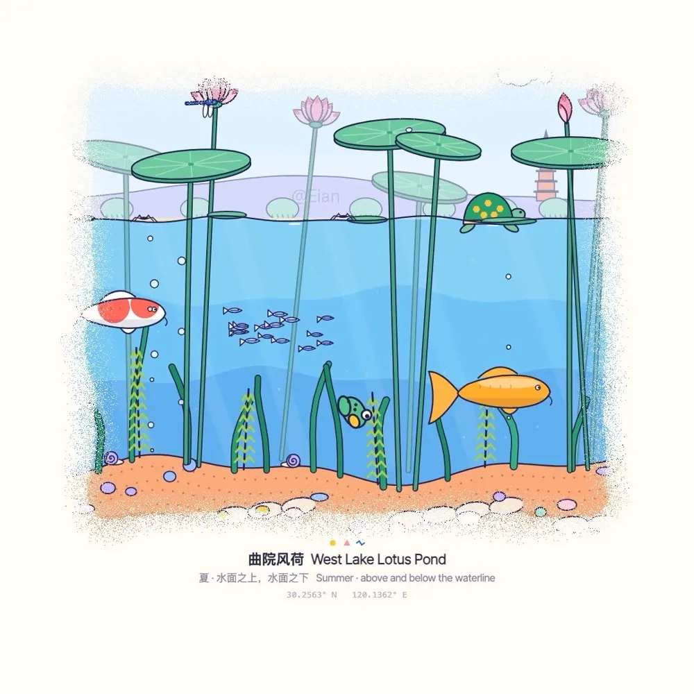
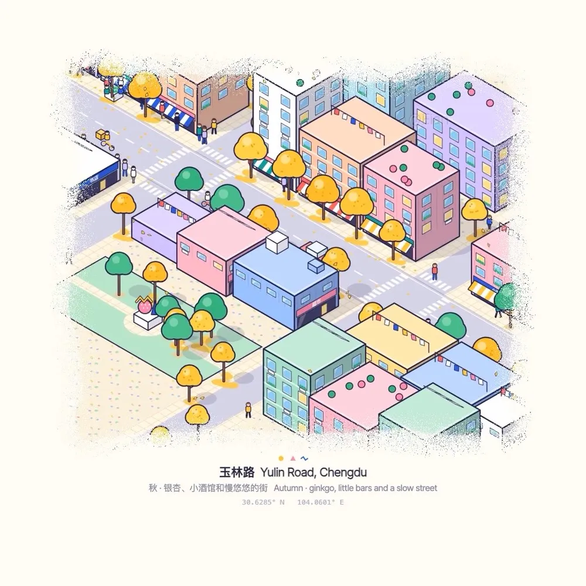

→ Eian 代码动画合集：全部相关帖子时间线、提示词、社区复刻与 Agent 复刻包（AGENT.md）

这是什么
- 一份可以直接复用的“代码动画”提示词。Eian 前一天发了一支稻田俯视小动画，收藏 367 次，评论区很多人要方法。第二天他用同一种风格做了荷塘短片，并把完整提示词贴出来，最后一行留空：“场景：【在这里写你的场景】”。
- 画面不是视频模型生成的。提示词让模型用 Canvas 写一个确定性的
frame(i)函数，用无头 Chrome 逐帧导出，再用 ffmpeg 合成；配乐也用代码合成（五声音阶旋律加环境声）。有人问是不是 Opus 5.5 做的，作者回答“是的”；问用 skills 还是 prompt，作者回答“直接提示词”。 - 和《一座城的年轮》是同一条路线。都是“让 Claude 写代码渲染每一帧”。不同的是，这次不靠真实数据，而是用风格约束把一个场景做成会动的微缩模型。
原帖（照录）
这种风格真的太适合做一些治愈系动画了！
又尝试了一些新的内容，比如这支荷塘风格的短片。提示词：用代码做一支 20 秒的"孟菲斯微缩世界"小动画，1080×1080，60fps。
画面：把一个场景做成会动的微缩模型。暖白底，内容放在居中的圆角画框里，四周多留白；画框边缘是颗粒状消散的边（像喷漆），开场从中心颗粒状长出来，结尾收回去。
配色：孟菲斯风格。饱和原色 + 粉彩（黄 #FFC93C、粉 #FF8DB5、钴蓝 #2E5BE6、珊瑚红 #FF5A5F、薄荷绿 #A9E6C6、天蓝 #8DD3F6、淡紫 #D3BEFF），所有物体有深靛色 #25214A 描边和不模糊的硬投影，大色块上铺圆点、条纹、折线这类小图案。
镜头：一镜到底，缓慢匀速移动，可以带一点旋转和推近。
节奏：靠画面里的小动静撑起来，比如鸟飞过、云影掠过、鱼游、人走、车开、叶子飘落，至少安排一两个有"剧情"的瞬间。
文字：画框下方三行居中小字：标题（中英）/ 季节 · 一句描述（中英）/ 随镜头变化的经纬度。
做法：用 Canvas 写一个确定性的 frame(i) 函数，输入帧号输出一张图，场景按坐标和固定随机种子生成；用无头 Chrome 逐帧导出，ffmpeg 合成。配乐也用代码合成：五声音阶的轻旋律 + 环境声，画面里的事件要和音效卡上。
先给我看 4 张样帧拼图，我确认后再渲全片。
场景：【在这里写你的场景】
— Eian（@EianLu），2026-10-26 20:29 SGT。附视频 1080×1080、20 秒，在 X 观看；本帖引用了下面的前一帖。
所引用的前一帖（照录）
再一次被Claude的审美震惊了🤯做动画也很👍
刷到一支稻田的俯视小动画，实际上就是把一张地图做成会动的微缩模型，再配上好看的经典配色，质感和视觉上就会显的很干净好看。
做法也很简单，全部用代码实现，Canvas写一个frame（i）函数逐帧画出每帧画面，用ffmpeg合成，配音也用代码生成。
一镜到底，慢推加一点旋转，再加画面里的一些小动静，比如鸟的飞行、鱼的动静、青蛙跳水什么的，画面就会显的很灵动。也可以做网页动画，可以交互。
— Eian（@EianLu），2026-10-26 17:30 SGT。附两支 20 秒视频，在 X 观看。

作者回复（照录）
两条帖子评论区里和做法相关的作者回复（时间为 SGT）：
直接提示词
是的
镜头都是可以调的，不一定非要俯视哇 这种做动画效果真的挺好的。
其实是可以的 不过没有自己找音乐好
是的！
哈哈哈这下思路打开了！
我新发的帖子有提示词可以去尝试一下！
我有发的哦 这条帖子的上面那一条
提示词拆解
这份提示词短，但每一行都在替模型做一个决定。逐段看：
| 段落 | 规定了什么 | 为什么有用 |
|---|---|---|
| 规格 | 20 秒、1080×1080、60fps，共 1,200 帧 | 方形画幅适合社交平台；先把帧数定死，后面的“慢”和“匀速”才有尺度。 |
| 画面 | 暖白底、居中圆角画框、四周留白；画框边缘像喷漆一样颗粒消散，开场从中心长出、结尾收回 | 画框把场景变成“桌上的模型”；颗粒进出场同时解决了开头和结尾，片子天然闭合。 |
| 配色 | 7 个具体色值 + 深靛色描边 + 硬投影 + 圆点/条纹/折线小图案 | 用色值代替“好看的配色”这类形容词；描边和硬投影让所有物体像同一套贴纸，风格一致性主要靠这一行。 |
| 镜头 | 一镜到底，缓慢匀速，可带旋转和推近 | 不剪辑就不用设计转场；慢推加微旋转是“微缩模型”观感的来源。 |
| 节奏 | 鸟、云影、鱼、行人、车、落叶；至少一两个有“剧情”的瞬间 | 画面信息靠小动静撑起来；“剧情瞬间”（比如青蛙跳水）给观众一个记忆点。 |
| 文字 | 画框下三行：中英标题 / 季节 · 一句描述 / 随镜头变化的经纬度 | 经纬度随镜头变化，是很省力的“真实地点”暗示，也让每支片都像同一系列。 |
| 做法 | Canvas 写确定性 frame(i)，坐标 + 固定随机种子；无头 Chrome 逐帧导出、ffmpeg 合成；五声音阶 + 环境声，事件与音效对齐 | 同一帧号永远得到同一张图，可以只改某一帧、可以重渲；声音和画面共用帧号时间线，才能“卡上”。 |
| 评审关卡 | 先出 4 张样帧拼图，确认后再渲全片 | 全片渲染慢，先看静帧能便宜地纠正风格。评论区 @growaiskills 补充：样帧里留一张开场、一张收尾，顺便检查颗粒进出场和字幕边距，作者回“是的！”。 |
| 场景槽 | “场景：【在这里写你的场景】” | 前面所有行是固定的风格骨架，只换最后一行就能出新片，例如荷塘、成都平原、玉林路。 |
色板
- 黄
#FFC93C - 粉
#FF8DB5 - 钴蓝
#2E5BE6 - 珊瑚红
#FF5A5F - 薄荷绿
#A9E6C6 - 天蓝
#8DD3F6 - 淡紫
#D3BEFF - 描边 / 投影 深靛
#25214A
用之前值得知道的几点
- 镜头角度可以换。有人试了侧视，觉得还是俯视好看。作者说镜头都可以调，不一定要俯视；荷塘这支就是水面上下的剖面视角，玉林路是等轴测视角。
- 代码配乐能用，但作者自己更偏向找现成音乐。他的原话是“其实是可以的 不过没有自己找音乐好”。如果要用现成音乐，记得核对授权。
- 时间最好按秒算。评论区 @zealdin 建议在帧函数里用
i/fps算时间，ffmpeg 合成时再指定-framerate，这样以后改时长或帧率不用重写动画。这和本站多篇代码成片文章里的“渲染契约”是同一个意思。 - 模型与耗时。作者确认用的是 Opus 5.5、直接提示词，没有 skill；渲染时长和费用没有说明。
- “孟菲斯”在这里是配色语言。提示词里的孟菲斯主要指饱和原色加粉彩、粗描边、几何小图案，用来画写实场景的微缩模型，和 1980 年代孟菲斯设计里夸张的几何家具造型不完全是一回事。
评论区观点
- “可以单独做一个库”：@lemomo_ai 认为这套风格可以单独做成风格库，作者回“这下思路打开了”。
- 马上有人跟做：前一帖下 @jesseqin_ 用它“演绎一下小学放学回家的路”，@jiangjiangling、@huqinyiyayuguan 也贴了自己的版本。
- 关于 AI 与才华：@less_is_more_ai 说，如果是人做的会惊讶于才华，AI 做的会慢慢被当成基本操作；作者反问“如果是人用AI做的勒？”。
- 对 Opus 视觉能力的惊喜：@josh_janse 说 Opus 最让他意外的是视觉能力，作者回“yes！！”。
本站相关
- Eian《一座城的年轮》：同一作者，同样让 Claude 写代码渲染每一帧，素材换成了真实建筑数据。
- kerazcity：Opus 5.5 动效手册：
seek(t)渲染契约、先看联系表再渲全片的评审循环，和这里的frame(i)+ “先看 4 张样帧”是一回事。 - mg-styles-15：15 种 MG 风格样本：同样是“通用骨架 + 风格专属段落”的提示词结构。
- 观默 Design Style：逐期拆解设计风格的代码短片，孟菲斯在其计划列表中。
- Shanshui：零素材、全代码出片的水墨山水，配乐同样用代码合成。
- Prompt Motion 画廊：233 条 Opus 5.5 动效视频与提示词。